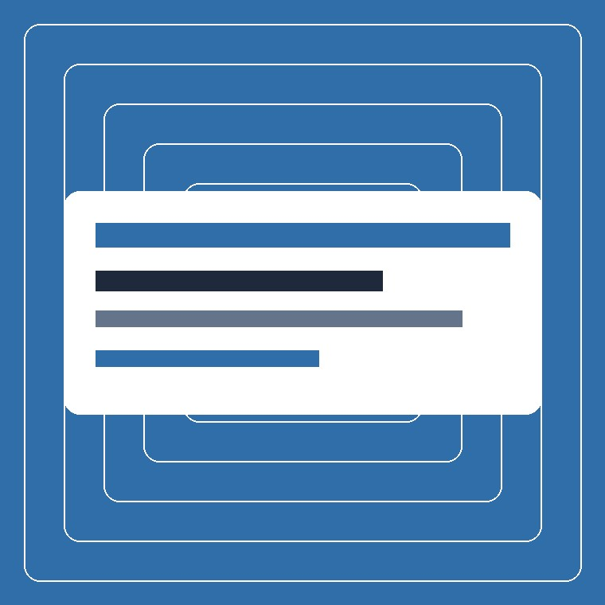
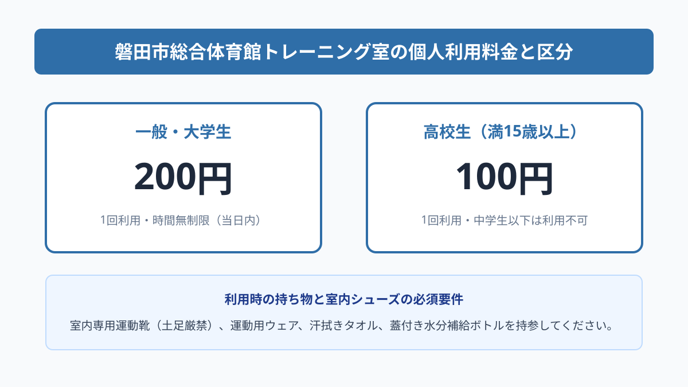
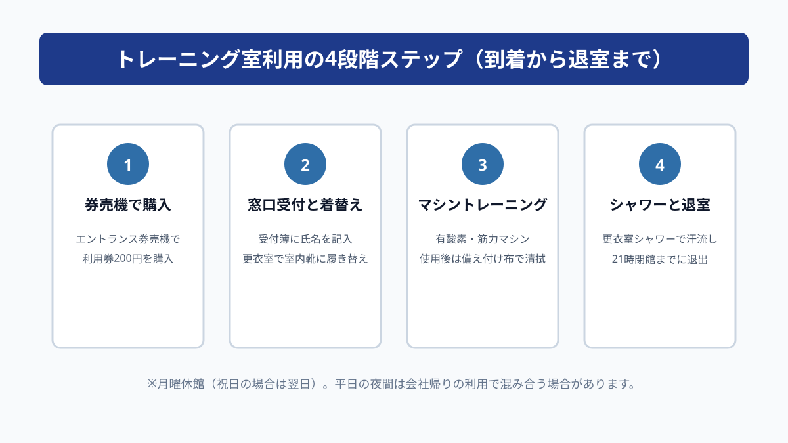

スポーツ・イベント
磐田市総合体育館トレーニング室｜個人利用の手順と料金

この記事の要点
Q. 磐田市総合体育館のトレーニング室は、個人で利用できる？
A. 一般・大学生1回200円、高校生100円で誰でも個人利用が可能です。事前予約や講習会は不要で、券売機で利用券を購入して入場します。室内専用シューズの持参と、更衣室・シャワーの利用手順を整理します。
導入——誰でも1回200円で使える公営トレーニング拠点
\n静岡県磐田市見付のかぶと塚公園内に位置する「磐田市総合体育館」は、メインアリーナやサブアリーナ、武道場などを備えた市内最大規模の公営屋内スポーツ施設です。各種スポーツ大会や実業団の公式戦会場として親しまれていますが、館内には市民が個人で利用できる本格的な「トレーニング室」が整備されています。
\n民間のフィットネスクラブに入会しようとすると、毎月数千円から1万円以上の月会費がかかり、忙しくて通えない月があると費用が無駄になってしまうという懸念がつきまといます。その点、公営体育館のトレーニング室であれば、月会費の縛りがなく、行きたいときに1回単位で手頃に利用できるのが最大の魅力です。
\nしかし、公営のトレーニング室と聞くと「敷居が高そう」「マッチョなアスリートばかりで一般人が入りにくいのではないか」「初回講習会を予約しないと使えないのでは」と躊躇してしまう市民の方も少なくありません。
\n結論からお伝えすると、磐田市総合体育館のトレーニング室は、事前の講習会予約などは不要で、高校生以上であれば誰でも1回200円（一般・大学生）、高校生100円で当日その場ですぐに利用できます。入口の自動券売機でチケットを買い、受付簿に記入するだけで入場可能です。
\nこの記事では、磐田市公式ウェブサイトの公表資料と管理事務所の案内を手がかりに、設置されているマシン設備の種類、料金体系、必要な持ち物、更衣室・シャワーの設備状況、混雑しやすい時間帯までを実務家の生活目線で分かりやすく整理します。運動習慣を始めたい市民の皆様の参考になれば幸いです。
\n
まず、公式資料から事実を整理する
\n磐田市公式ウェブサイトの「施設案内 磐田市総合体育館」によると、体育館の開館時間は午前8時30分から午後9時（21時）までとなっています。休館日は毎週月曜日（月曜日が国民の祝日にあたる場合はその翌日）および年末年始（12月29日から1月3日）です。
\n利用料金は極めて明瞭に規定されており、一般・大学生は1回200円、高校生は1回100円です。なお、安全管理上の理由から中学生以下の利用は認められていません。利用料の支払いは体育館エントランスホールに設置された自動券売機で行います。
\nトレーニング室内に整備されている機器スペックを確認すると、有酸素運動用のランニングマシン（トレッドミル）やエアロバイク（アップライトバイク・リカンベントバイク）が複数台配置されています。天候に左右されずに心肺機能を高める有酸素運動を行うことができます。
\n筋力トレーニング用マシンとしては、チェストプレス、ラットプルダウン、レッグプレス、アブドミナルなど、主要な筋肉群を全身網羅するウェイトスタック式マシンが揃っています。ピンを差し替えるだけで簡単に重量調節ができるため、筋トレ初心者や女性、高齢者でも安全に負荷を設定できます。
\nさらにフリーウェイトコーナーには、ダンベルセットやアジャスタブルベンチが完備されており、自重トレーニングや本格的なダンベル運動にも対応しています。壁面には大型ミラーが設置され、運動フォームを自分で確認しながら正確なトレーニングが可能です。
\n磐田の暮らしに置き換える
\n公認資料の数値を磐田市民の日常的な生活導線に置き換えてみましょう。総合体育館は国道1号見付ICから車で約3分、JR磐田駅からも車で約8分の好立地にあり、市内全域から車でアクセスしやすい場所にあります。
\n夜9時まで開館しているため、磐田市内の事業所や近隣の工場等で働く会社員が、仕事帰りにスーツから運動着に着替えて1時間汗を流すという使い方が極めてスムーズに実現できます。夜間の住宅街を走る防犯上の不安や、冬の寒さ・夏の猛暑に悩まされることなく、空調の効いた快適な室内で運動を継続できます。
\nまた、退職後の健康寿命延伸を目指すシニア世代にとっても、平日の午前中や午後の早い時間帯は混雑が少なく、自分のペースでゆったりと筋力維持に取り組める絶好の居場所になります。マシンの操作方法は図解プレートで分かりやすく示されているため、トレーナーがマンツーマンでつかなくても迷わず利用できます。
\n高校生にとっても、1回100円という駄菓子感覚の料金で本格的な筋力強化ができる環境は大きなメリットです。部活動の休養日や放課後、自主的な体力強化を図る学生たちの健全な活動拠点として機能しています。
\n駐車場に関しても、総合体育館の正面および周囲に広大な無料駐車場（かぶと塚公園共用）が完備されています。数百台規模の収容能力があるため、大規模なアリーナ大会と重ならない限り、満車で駐められない心配はほぼありません。
\n
評価——良い点と、注文したい点
\n磐田市総合体育館トレーニング室について、市民生活者の視点から客観的に評価してみましょう。まずは良い点です。
\n良い点は、何よりも「1回200円・月会費ゼロ」という抜群のコストパフォーマンスと利用の手軽さです。民間の24時間ジムのように数千円の月額固定費を毎月引き落とされる重圧がなく、忙しい月は行かず、余裕のある週は週2〜3回通うといった柔軟な運動習慣が可能です。
\nまた、館内設備の衛生管理と空調の快適さも特筆すべき良い点です。清掃が行き届いており、更衣室にはコインロッカーと温水シャワーが完備されています。トレーニング後にしっかりと汗を流して清潔な状態で帰宅できる点は、日々の生活習慣として定着させる上で大きな強みです。
\n一方で、利用者の視点から注文したい点も率直に挙げておきます。
\n注文したい点は、平日の夕方（18時〜20時頃）における有酸素マシンの混雑と待ち時間の発生です。仕事帰りの市民が集中する時間帯には、ランニングマシンの台数が限られているため、順番待ちが生じることがあります。利用時間の上限（1回30分など）のルール周知をより徹底してほしいところです。
\nまた、フリーウェイトのバーベル設備（ベンチプレス台やスクワットラック）が常設されていない点も、超上級者にとっては物足りなさを感じる部分かもしれません。安全管理上の配慮からマシン中心の構成になっていますが、その分初心者にとっては威圧感がなく使いやすいという裏返しのメリットでもあります。
\n対案・結論——三段階で確認する
\nこれらの特徴を踏まえた上で、市民がストレスなくトレーニング室を活用するための対案・結論として、「3つの賢い使い分けルール」を提案します。
\n第1のルールは、「平日の昼間または夜遅い時間帯を狙う」ことです。平日の午前9時〜11時、または夜20時以降のラスト1時間は比較的空いており、自分の好みのマシンを待たずにスムーズに連続使用できます。混雑する18時台を避けるスケジュール調整が効果的です。
\n第2のルールは、「室内専用シューズとタオルを車載しておく」ことです。トレーニング室は土足厳禁のため、必ず室内専用の運動靴が必要です。靴とウェア、タオルをトートバッグにまとめて車のトランクに常備しておけば、仕事帰りに「今日ちょっと寄っていこう」と思い立った瞬間に即座に立ち寄れます。
\n第3のルールは、「アリーナでの大規模大会の開催予定を事前に把握する」ことです。体育館全体で県大会などの大型イベントが開催されている日は、駐車場が混雑したり館内が非常に賑やかになります。磐田市のスポーツ施設イベントカレンダーを事前に確認しておくことで、落ち着いてトレーニングできる日を選べます。
\n事前の準備と時間帯の工夫を少し意識するだけで、公営トレーニング室は生活の質を劇的に向上させる強力なパートナーになります。
\n確認する順番
\n実際に磐田市総合体育館のトレーニング室を利用する当日は、以下の手順に沿って行動すると極めて円滑に入館から退館まで進めることができます。
\n- 持ち物の準備：室内専用シューズ、運動着、タオル、水分補給ボトルを用意する。
- 券売機でチケット購入：エントランスホール券売機で個人利用券（200円または100円）を購入。
- 受付簿へ記入：トレーニング室入口または総合窓口の名簿に氏名と入場時間を記入。
- 更衣室で着替え：ロッカーに手荷物を預け、室内履きに履き替えてトレーニング開始。
- マシン利用と清拭：使用後は備え付けの消毒タオルでシートやグリップを拭く。
- シャワーと退出：更衣室の温水シャワーで汗を流し、閉館21時までに退出。
体育館の総合案内窓口の職員は丁寧に対応してくれます。初めての利用で不安がある場合は、「トレーニング室を初めて使います」と伝えれば、券売機のボタンの位置から更衣室への行き方まで優しく案内してもらえます。
\n家族や仲間で共有するための記録
\nトレーニング室は多くの市民が共有する健康づくりの場です。お互いが気持ちよく利用するために、押さえておきたいマナーがあります。
\n第1に、マシン使用後の「汗の清拭」の徹底です。各マシンの近くには消毒用スプレーと専用タオルが常備されています。シートやグリップに汗がついたまま放置せず、使用が終わったら必ず次の人のためにサッと拭き取るのがエチケットです。
\n第2に、マシンの独占防止とスマートフォンの操作マナーです。セット間のインターバル中にシートに座ったまま長時間スマートフォンを操作していると、他の利用者の練習を妨げてしまいます。休憩時はシートを空け、通話は室外のロビーで行う配慮が求められます。
\n第3に、ウェイトの丁寧な取り扱いです。ウェイトスタック式のマシンで重りを下ろす際、「ガチャン」と大きな音を立てて衝撃を与えると、器具の故障の原因になるだけでなく周囲の人を驚かせてしまいます。最後まで筋肉でコントロールしながら静かに戻す動作を心がけましょう。
\n大石の視点
\n静岡県磐田市で不動産と介護の事業を営み、日頃から地域住民の暮らしや健康の相談を受ける立場から見ると、身近な場所に誰でも手軽に利用できる公営運動施設があることは、地域の大きな資産だと感じます。
\n健康維持や生活習慣病の予防は、個人の充実した毎日の基盤であると同時に、将来的な医療・介護費用の抑制や、生き生きとした地域社会の維持に直結する重要なテーマです。「運動しなければ」と思っていても、民間ジムの契約や毎月の固定費が心理的な壁になって一歩を踏み出せない方は大勢いらっしゃいます。
\nそのような方にとって、1回200円で利用できる磐田市総合体育館のトレーニング室は、まさに生活防衛と健康投資を両立させる理想的な選択肢です。立派な施設があっても、市民が使いこなさなければ宝の持ち腐れになってしまいます。
\n無理に毎日通う必要はありません。週に1回、あるいは月に数回でも、身体を動かして汗を流す心地よさを体験してみてください。自分自身の健康を自分で整える習慣が、磐田での日々の暮らしをより豊かで前向きなものに変えてくれるはずです。
\n日々の生活の中で、仕事や家庭の用事に追われていると、運動の優先順位はどうしても後回しになりがちです。しかし、体が重く感じたり肩こりや腰痛が気になり始めたときこそ、軽い有酸素運動やストレッチを兼ねたマシントレーニングが驚くほどのリフレッシュ効果をもたらします。
\n磐田市総合体育館のような公営の施設は、市民一人ひとりの健康を守るために税金で維持管理されている共有の財産です。敷居の高さを感じて遠巻きに眺めるのではなく、自分たちの生活を豊かにするための日常の道具として遠慮なく使い倒していただきたいと考えています。
\n健康な身体があってこそ、日々の仕事にも全力で打ち込め、家族との時間も笑顔で過ごすことができます。200円というコイン1枚を握りしめて体育館の扉を押すその一歩が、数年後の自分自身の健康寿命を大きく伸ばす確かな投資になります。
\nまとめ
\n磐田市総合体育館のトレーニング室は、高校生以上の市民であれば予約不要・1回200円（高校生100円）で気軽に利用できる開かれたスポーツ拠点です。
\n有酸素マシンから各種筋力トレーニングマシン、更衣室、シャワー、無料駐車場が整っており、仕事帰りや休日の健康維持に最適です。
\n室内シューズとタオルの持参、使用後のマシン清拭マナーを守り、身近な公共施設を賢く使いこなして、健康的でアクティブな磐田ライフをお楽しみください。
\n- 磐田市総合体育館トレーニング室は予約不要、一般200円・高校生100円で誰でも利用可能。
- 有酸素マシン、ウェイトスタックマシン、ダンベル、更衣室・温水シャワー完備。
- 室内専用シューズが必須、使用後のマシン清拭マナーを守り快適に健康づくりを推進。
参考にした公式情報
- 磐田市総合体育館／磐田市（2026年9月12日確認）
- 公園施設ガイド かぶと塚公園／磐田市（2026年9月12日確認）
最終確認日：2026-09-12 ／ 本記事は公表情報と執筆者の見解を分けて記載しています。制度・数値・公開状況は変更される場合があるため、最新情報は磐田市公式ページでご確認ください。